<h2>Support Vector Machine Overview</h2>
<br/>

<b>What is an SVM?</b>
<p>A Support Vector Machine (SVM) is a type of supervised learning algorithm, primarily used for classification and regression tasks. It is used to categorize a given data set into specific classes or make predictions from continuous values. SVMs are particularly powerful on high-dimensional data. In addition, SVM is a classification technique that finds a hyperplane that can divide a space of N dimensions into (N-1)-dimensions. To make it easier to understand, here's an example.</p>
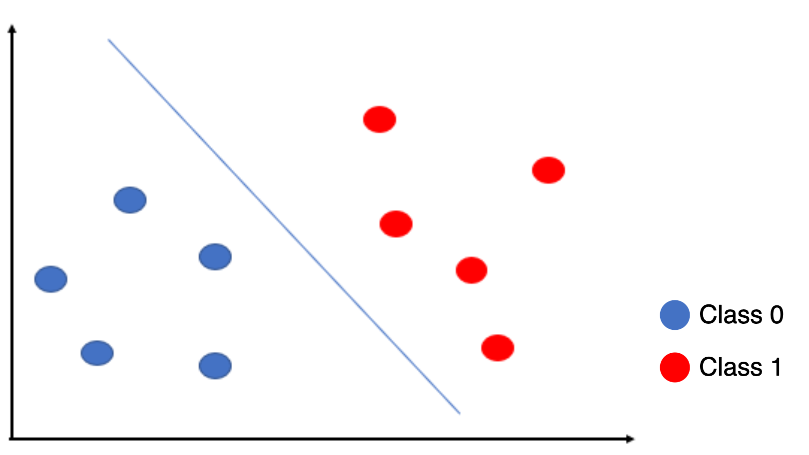
<br/>
<p>In the image above, ten pieces of data are currently categorized into classes 0 and 1. The goal is to classify classes 0 and 1 correctly. The SVM aims to find the optimal boundary that separates the two classes. First, let's discuss what the SVM calls the optimal boundary.</p>
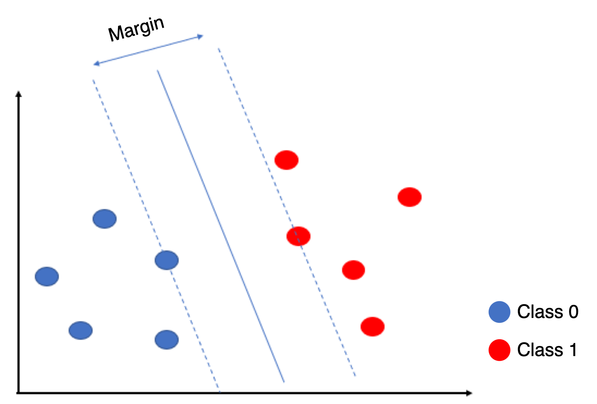
<br/>
<p>The margin is the gap between classes, the distance between the data at the ends of each class. SVMs aim to maximize this margin when classifying, which means finding a boundary that maximizes the margin. The support vectors are the data in each class closest to the margin. The two data points above the dotted line are the support vectors in the figure above. They are called support vectors because the position of these data points determines the position of the boundary (hyperplane), hence the name supporting the hyperplane function.</p>
<p>Returning to the definition of SVM and interpreting it as finding a hyperplane that can divide the N-dimensional space into (N-1) dimensions, The data above is a two-dimensional space. A boundary with a straight line (2-1)-dimensional was found to classify it. If the data were three-dimensional, it would be represented by N, (N-1) dimensions, a generalization of the division into a two-dimensional space. Also, the hyperplane is the boundary that has been discussed, and it is a boundary that can be classified in higher dimensions instead of two dimensions. Here's an illustration to help understand.</p>
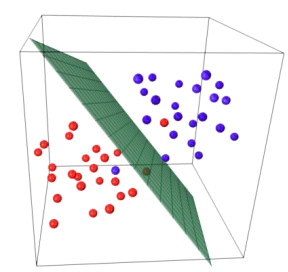
<br/>
<p>To summarize, SVM is a technique for classifying classes so that the optimal hyperplane that separates the data is the maximum margin. This is one of the reasons why SVM is called a linear separator: one of its main goals is to find the linear decision boundary (hyperplane) that best separates the data, i.e., the line or plane that divides the data into two classes. However, given that it can also deal with non-linear patterns using kernel tricks that will be discussed later, it can be observed that SVM is not limited to being a linear classifier.</p>
<br/>
<b>Types of SVMs</b>
<p>There are two types of SVMs: linear SVMs and nonlinear SVMs.</p>
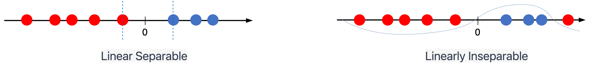
<br/>
<p>As seen in the image above, not all data can be classified linearly, so a linear SVM is used for the data on the left and a nonlinear SVM for the data on the right to solve the problem. First, let's discuss linear SVMs. Linear SVMs are employed when the data can be classified linearly and are broadly divided into hard and soft margin methods.</p>

<b><i>Linear Separation</i></b>
<p><b>Hard Margin</b> is a method that finds a hyperplane of maximum margin capable of separating the two classes. However, all training data must be linearly separated so that they lie on the outside of the margin. In other words, any error is not allowed.</p>
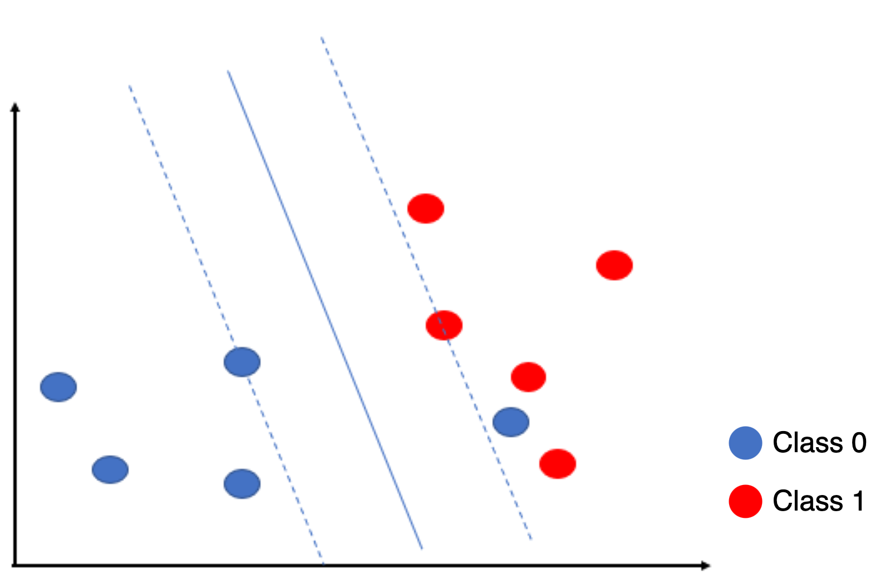
<br/>
<p>As shown above, one piece of data in class 0 is outside the margin, and if there is an error, it will violate the goal of the hard margin.</p>
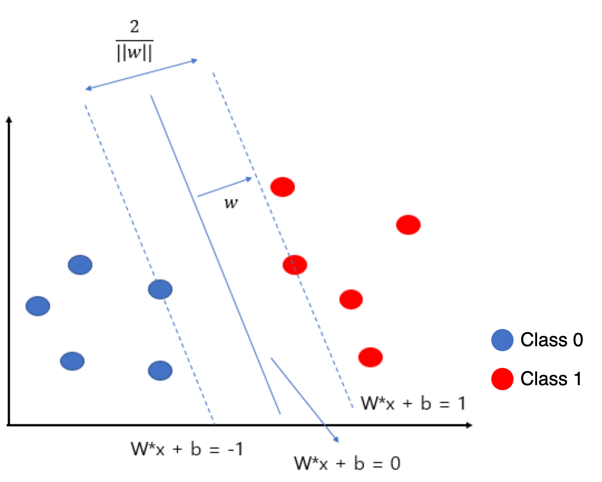
<br/>
<p>Where W represents the weight, {w<sub>1</sub>, w<sub>2</sub>, w<sub>3</sub> ... w<sub>n</sub>}, and b is the bias. The goal is to maximize the value of 2/||w|| on the hard margin. When classification is performed, the test data is entered into the discriminant function, and classification is based on 0. If deducing the expression for the objective function, it is as follows.</p>
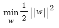
<br/>
<p>However, it is practically impossible to find a decision boundary that can divide all data linearly and without error. This is where the concept of soft margins comes in.</p>
<br/>
<p><b>Soft margin</b> is a way to improve on the limitations of hard margin by allowing for some degree of misclassification rather than looking for a perfectly classifying hyperplane. Soft margin allows for misclassification and uses a slack variable to account for it. The slack variable is used to measure the distance of misclassified data from the corresponding decision boundary, which can be understood by looking at the figure below.</p>
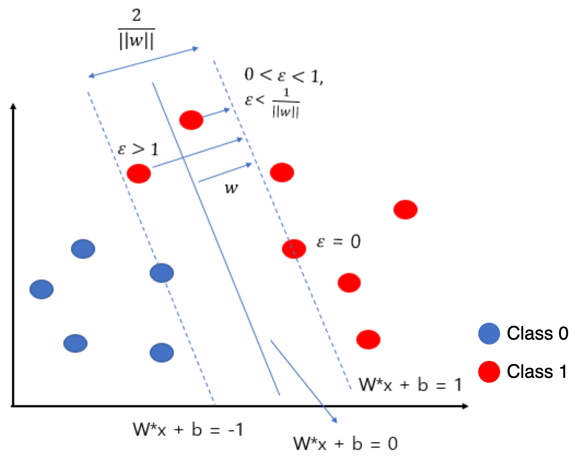
<br/>
<ul>
    <li><b>ε = 0</b>: if the classification is correct</li>
    <li><b>0 &lt; ε &lt; 1</b>: Correct classification, but closer to the hyperplane than the support vector</li>
    <li><b>ε &lt; 1</b>: if the classification is incorrect</li>
</ul>
<br/>
<p>To summarize, since perfect classification is not possible, a soft margin is used to allow an error above and below the hyperplane equal to the size of the slack variable. The objective function with the slack variable is shown below.</p>
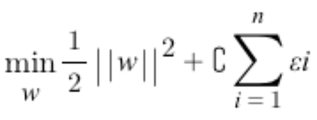
<br/>
<p>The slack variable is added to the existing objective function, which can be adjusted by limiting the sum of the slack variables through a parameter called C(cost). So, parameter C plays an essential role in controlling overfitting. A larger C allows for less margin for learning error, resulting in fewer errors but the risk of overfitting, while a smaller C allows for larger margins, more errors, and the risk of underfitting.</p>
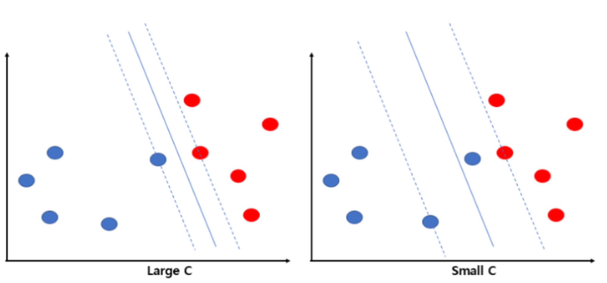
<br/>
<br/>
<br/>
<b><i>Nonlinear Separation</i></b>
<p>What if, unlike hard and soft margins, linear separation is not possible?</p>
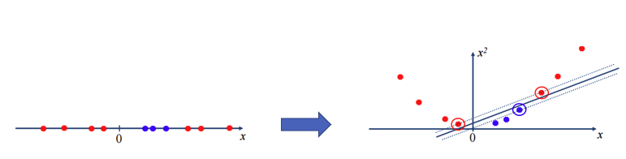
<br/>
<p>The concept behind this is straightforward. In the figure on the left below, linear separation is impossible, but we converted the data to two dimensions to solve this problem. The basic concept of nonlinear separation is that the input space that cannot be linearly separated is sent to a higher-dimensional feature space that can be linearly separated and then converted back to the original input space to perform nonlinear separation.</p>
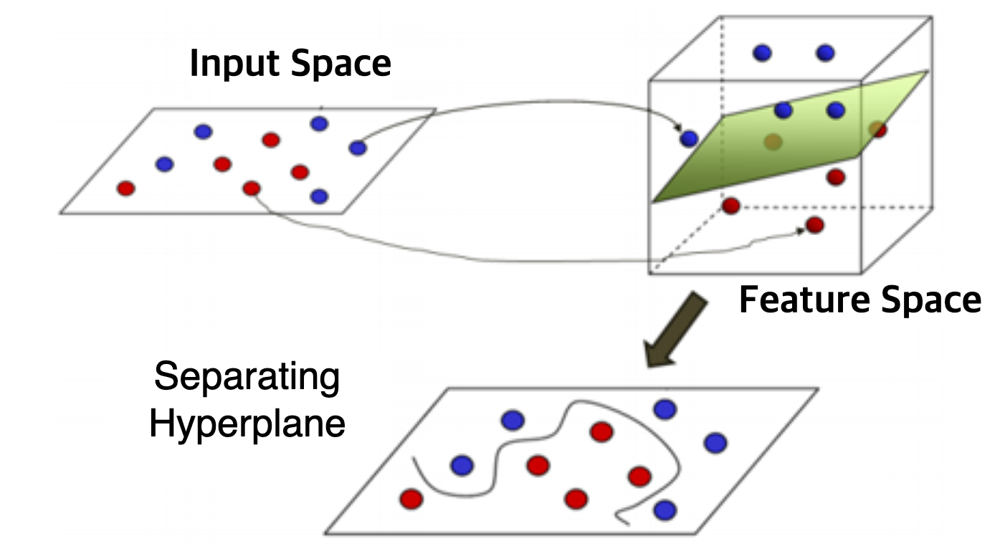
<br/>
<p>To convert the input space to the feature space, we use a mapping function, which may vary depending on the definition of the mapping function, and the expression can be expressed as below.</p>
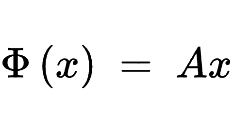
<br/>
<p>To understand the idea of moving each observation to a higher dimension, it is helpful to refer to the geometric meanings of matrices and vectors. A matrix acts as a linear transformation that transforms a particular vector to a new position. This can be done in different dimensions. For example, the expression below shows that multiplying the original two-dimensional v vector by the A matrix transforms it into a three-dimensional Av vector.</p>
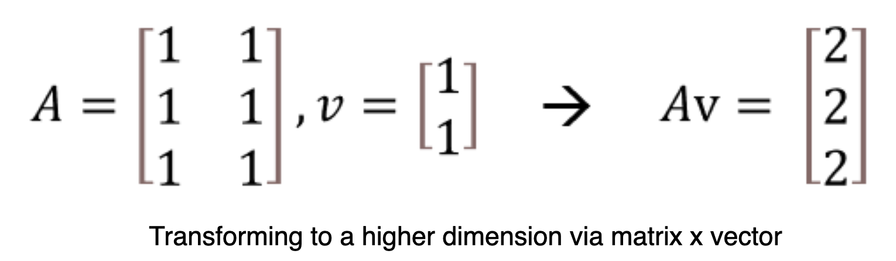
<br/>
<p>The data is then mapped to a higher dimension, moving each observation to a higher dimension and calculating the inner product. The inner product measures the similarity between two vectors, which is used to find the decision boundary. In low dimensions, finding the perfect decision boundary (hyperplane) can be challenging, but by mapping the data to higher dimensions, non-linear patterns can be distinguished linearly.</p>
<p>However, this is where the problem arises. While transforming to a higher-dimensional feature space and solving the objective function problem is feasible in simple dimensions, the computational growth becomes prohibitive as the order increases. This is where kernel tricks come in. Kernel tricks don't actually scale the characteristics of the data, but they compute as if they do.</p>
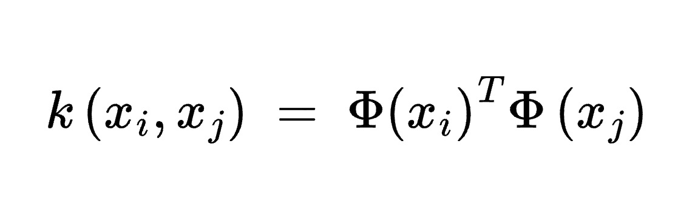
<br/>
<p>As shown in the expression above, the kernel trick does not need to explicitly know the dimensionality of the feature space or the mapping relationship; it only needs to compute the inner product of two vectors in the extended feature space. The idea is to use a kernel function to solve a simple computation without the need for high-dimensional complexity. There are two types of kernel functions: polynomial kernel and rbf kernel (radius basis function).</p>


